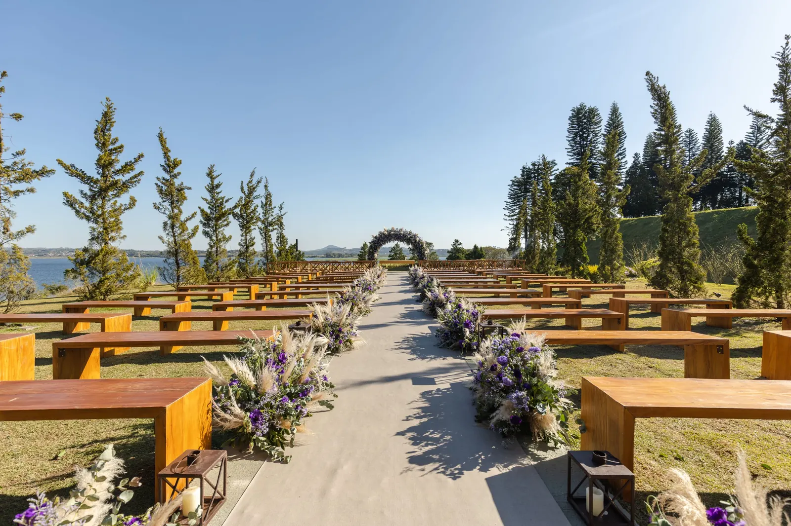
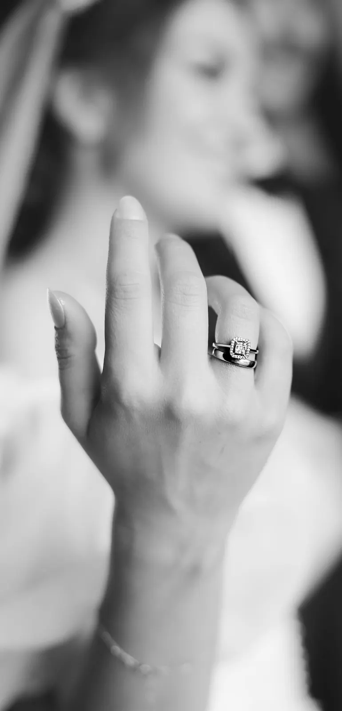
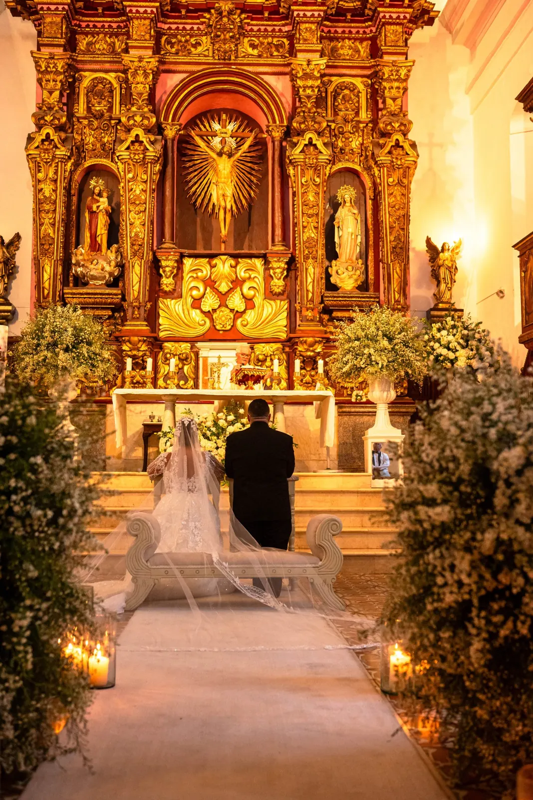
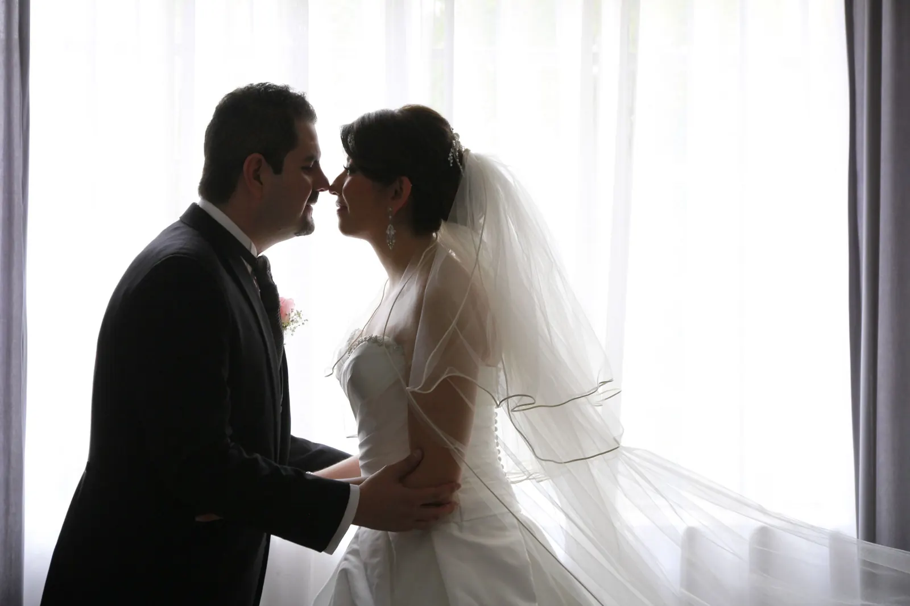
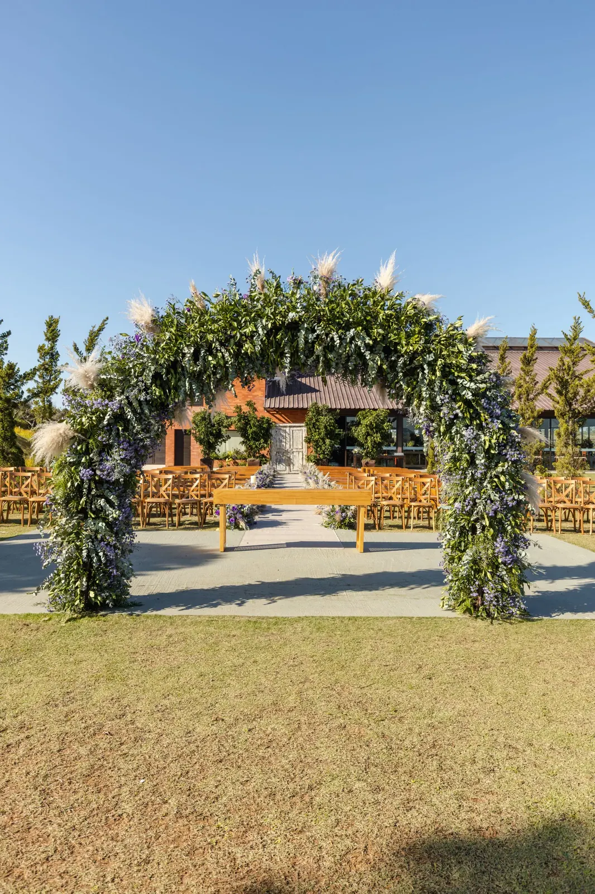
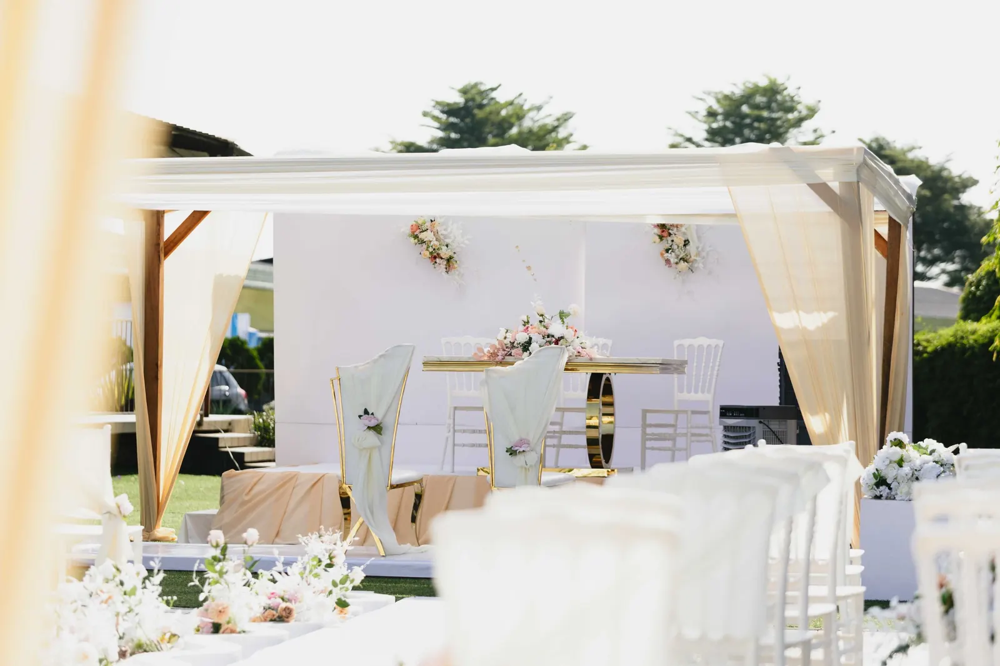

01 / 04
Lena & Tobias
Lakeside Estate, Stellenbosch, South Africa
A lavender and pampas ceremony on the edge of the water, with dinner under the beams of the old barn.
View the galleryHonest, unhurried photographs of your wedding day. Based in Cape Town and happy to travel wherever you are saying yes.


I photograph around twenty five weddings a year, so every couple gets my full attention from the first email to the final gallery.
My style is quiet and observational. I will guide you when it helps, then step back and let the day unfold. You get natural colour, real moments and a gallery your grandchildren will still want to look through.
Amara
More about me
Lakeside Estate, Stellenbosch, South Africa
A lavender and pampas ceremony on the edge of the water, with dinner under the beams of the old barn.
View the gallery
Iglesia de San Pedro, Cartagena, Colombia
Candlelight, a gilded altar and a veil that ran the length of the aisle.
View the gallery
Old Chapel, Magaliesberg, South Africa
A tiny white chapel, a railway sleeper path and a garden lunch that went on until dark.
View the gallery
Garden Pavilion, Bursa, Türkiye
Blush drapery, gold chairs and a bouquet held high on the little bridge over the pond.
View the galleryA three minute film from my partner Jonah, cut to music you choose, delivered alongside your photographs.
See add ons
"We barely noticed Amara all day, then the gallery arrived and there was every hug, every tear and my dad dancing. It was like living the day twice."Isabel & Marco, Cartagena




I take a limited number of weddings each season. Send me your date and a little about your plans and I will reply within two working days.